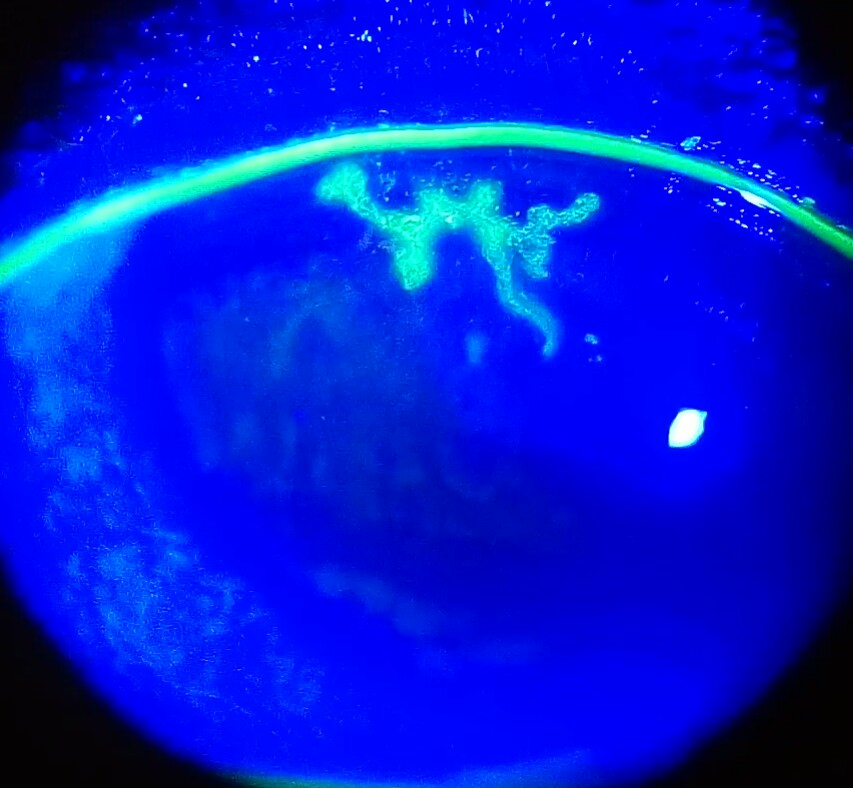
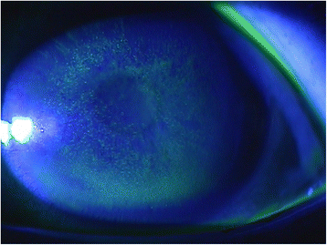

myMedKitt / Ophthalmology / PROPOSED CONSULT / 19 November 2026Acute Keratitis
Vision-threatening infection, corneal staining patterns, and a practical treatment pathway for the emergency department.
Review draft. Not live. Clinical outline and new imagery require approval before the consult is built or published. Adult regimens below assume normal renal function unless stated otherwise; pediatric, pregnant, immunocompromised, or renally impaired patients need individualized treatment.
Five toolbar tools
StepsStain AtlasDifferentialRx GuideEscalate
- Steps: rapid examination, emergency exclusions, first treatment and handoff.
- Stain Atlas: expandable original pattern illustrations plus licensed clinical examples, with examination-light labels.
- Differential: morphology, exposure history and distinguishing findings, not a photo-only diagnosis.
- Rx Guide: diagnosis-specific drops, concentrations, schedules, route, off-label status and links to sources.
- Escalate: culture indications, immediate versus same-day consultation, admission/transfer and discharge checks.
No invented risk score or unnecessary calculator. These tools open the exact clinical reference needed at the bedside.
Proposed flow: seven clinical modules
- First look and safety: visual acuity in each eye, chemical exposure, open globe, acute angle closure and endophthalmitis exclusions. Chemical exposure gets immediate irrigation, before a prolonged examination. Suspected open globe gets a rigid shield and no pressure/tonometry.
- Focused history and examination: onset, pain, photophobia, vision loss, contact lenses/overnight wear, water exposure, vegetation trauma, UV exposure, prior HSV/zoster, steroids, surgery, immune disease and incomplete lid closure. Examine pupils, lids, cornea under white light and fluorescein/cobalt blue, anterior chamber and corneal sensation before anesthetic when relevant. Measure defect and infiltrate separately. Evert upper lid after globe injury is excluded.
- Pattern and differential: ulcer/infiltrate, dendrite, pseudodendrite, punctate defects, abrasion, vertical tracks, exposure distribution or minimal staining despite concerning stromal disease.
- Microbial ulcer: immediate ophthalmology contact, sampling when indicated and promptly available, intensive topical antibiotics, reassessment and access to frequent drops.
- HSV and zoster: separate active epithelial disease from geographic ulcer, stromal/endothelial disease and uveitis; choose appropriate antiviral and avoid an unsupervised steroid pathway.
- Atypical and noninfectious: fungal/Acanthamoeba suspicion, UV injury, exposure, toxic drops, recurrent erosion, sterile contact-lens infiltrate, neurotrophic and peripheral ulcerative disease.
- Disposition and reassessment: documented ophthalmology plan, medications physically obtainable, administration feasible, repeat acuity/lesion assessment and explicit return precautions.
Proposed original staining atlas
Original schematics, not photographs. Green = fluorescein uptake; gray = plaque/infiltrate. Patterns overlap. Tap a panel to enlarge.
Provenance: original vector teaching artwork created for this proposal, not copied from a clinical photograph. No third-party image license required. Green means fluorescein uptake; gray means plaque/infiltrate. VZV and ulcer panels are explicitly interpretive, not literal cobalt-blue photographs.
Placement: Stain Atlas toolbar and matching pattern branch. Purpose: distinguish HSV terminal bulbs from VZV plaques, identify diffuse epithelial injury and retained foreign-body clues, and show why an infiltrate makes an apparent abrasion concerning. The ulcer pattern is not organism-specific. Final in-app delivery will use separate expandable panels, so phone users can read each pattern.
Clinical photographs proposed for approval

HSV epithelial disease: branching fluorescein-positive corneal lesion. The bright curved superior line is tear-film dye, not the ulcer. Planned placement: HSV branch and Stain Atlas. Dendritic corneal ulcer, Imrankabirhossain, CC BY-SA 4.0. Original image unmodified; display size adjusted.
UV photokeratitis: diffuse punctate epithelial injury after UV exposure. This pattern is not specific to UV. Planned placement: UV branch and Stain Atlas. Kwon DH, Moon JD, Park WJ, Kang WY, Kim SH, Lim HM, Ahn JS, Chae HJ. Figure 2, case report, 2016. CC BY 4.0, verified on the publisher PDF. Original image unmodified.Both source URLs returned HTTP 200 with image content types and both downloaded images were visually inspected. Images are proposals only, not published app assets.
Differential that changes management
| Condition | Useful clues | Action / limitation |
|---|
| Bacterial keratitis / corneal ulcer | White-gray stromal infiltrate, often an overlying staining defect, pain, decreased vision; contacts raise concern for Pseudomonas. | Urgent ophthalmology and intensive topical therapy. Do not use a conjunctivitis-frequency regimen for an established ulcer. |
| HSV epithelial keratitis | Branching ulcer with terminal bulbs, reduced corneal sensation, often unilateral. | Antiviral; no topical steroid for active epithelial disease. Early HSV need not have a classic dendrite. |
| VZV / HZO | V1 rash, pain, raised pseudodendrites without terminal bulbs; less central fluorescein uptake. | Systemic antiviral and ophthalmology. Absence of a nasal-tip lesion does not exclude eye involvement. |
| Fungal keratitis | Vegetation/soil trauma, steroid use; feathery edge or satellites can suggest it. | Urgent scraping and specialist antifungal therapy. Appearance cannot reliably establish organism. |
| Acanthamoeba | Contacts plus water exposure, severe or disproportionate pain, perineural disease; a ring can occur later. | Do not wait for a ring or assume absence of pain excludes it. Specialist testing and antiamoebic drops. |
| UV / superficial punctate injury | Often bilateral after UV exposure, diffuse punctate staining. Similar staining occurs with dry eye and toxic drops. | Exposure history matters. Exclude infiltrate, infection and foreign body. |
| Abrasion / recurrent erosion / subtarsal foreign body | Confluent defect, waking pain in recurrent erosion, vertical linear tracks with a retained upper-lid foreign body. | Route to existing corneal injury/foreign-body pathways only after microbial keratitis is excluded. |
| Exposure / neurotrophic keratopathy | Incomplete closure, inferior/interpalpebral defects; reduced sensation or unexpectedly little pain. | Lubrication and closure protection; persistent defect, thinning or infiltrate requires specialist review. |
| Sterile marginal or contact-lens infiltrate; peripheral ulcerative keratitis | Peripheral lesions, lid disease, autoimmune disease or adjacent scleritis. | Do not declare sterile from appearance alone. Thinning/autoimmune melt requires urgent ophthalmology and systemic evaluation. |
| Important mimics | Conjunctivitis, anterior uveitis, scleritis, angle closure, endophthalmitis. | Normal/limited fluorescein staining does not exclude a vision-threatening diagnosis. Pain, photophobia or reduced acuity require more than a conjunctivitis label. |
Treatment guide proposed for the consult
Drug choices are not interchangeable across these branches. Obtain corneal sampling first when indicated and immediately feasible; do not delay sight-saving treatment during a prolonged transfer.
| Branch | Regimen / plan | Safeguard and source |
|---|
| Bacterial ulcer: selected fluoroquinolone case | Ciprofloxacin ophthalmic 0.3%: 2 drops in the affected eye every 15 minutes for the first 6 hours, then 2 drops every 30 minutes for the rest of day 1; day 2: 2 drops hourly; days 3–14: 2 drops every 4 hours. | FDA-labeled ulcer schedule, not an automatic taper if worsening. Confirm with ophthalmology; large, central, deep or atypical disease needs a different intensity/strategy. Ciprofloxacin label |
| Severe / central / vision-threatening bacterial disease | Ophthalmology-directed compounded vancomycin 25–50 mg/mL plus tobramycin 15 mg/mL: each 1 drop hourly, alternating drugs every 30 minutes, including overnight. Specialist may prescribe an initial loading phase and adjust coverage to smear/local resistance. | Compounded ophthalmic preparations only. A cefazolin-based regimen may be selected when appropriate; avoid silently treating all ulcers with the same combination. AAO EyeWiki |
| HSV dendritic epithelial disease | Ganciclovir 0.15% gel: 1 drop five times daily while awake until healed, then three times daily for 7 more days. Adult oral alternatives: acyclovir 400 mg five times daily or valacyclovir 500 mg twice daily, each for 7–10 days. | Choose a regimen with ophthalmology; do not routinely combine all options. Oral treatment is off-label for HSV keratitis and needs renal review. No topical steroid in active epithelial disease. Ganciclovir label; AAO HSV guideline |
| HSV geographic ulcer / stromal / endothelial disease | Urgent specialist assessment. Geographic ulcer oral options in AAO guidance include acyclovir 800 mg five times daily or valacyclovir 1 g three times daily for 14–21 days. Stromal disease requires assessment of epithelial integrity and antiviral coverage; steroids and taper are ophthalmologist-directed. | Do not apply the simple dendritic regimen or the epithelial “no steroid” rule indiscriminately to all stromal disease. Renal adjustment required. AAO HSV guideline |
| HZO | Valacyclovir 1 g PO three times daily for 7 days, started promptly. Do not withhold evaluation/treatment solely because presentation is beyond 72 hours when ocular disease or new lesions are present. | Renal zoster schedule: CrCl 30–49 mL/min: 1 g every 12 h; 10–29: 1 g every 24 h; below 10: 500 mg every 24 h; after hemodialysis on dialysis days. Severe/disseminated or immunocompromised cases may need IV therapy/admission. AAO HZO; VALTREX label |
| Fungal suspicion | Corneal specialist urgently; scraping and targeted treatment. Natamycin 5% suspension, 1 drop every 1–2 h initially, is a key option for susceptible filamentous fungi. | Shake suspension; species and depth determine agent, course and taper. No preset ED taper or empiric steroid. Natacyn label |
| Acanthamoeba suspicion | Specialist diagnostic sampling and intensive antiamoebic therapy, commonly PHMB 0.02% or chlorhexidine 0.02%, sometimes with a diamidine. Prolonged treatment and close corneal follow-up. | Reference only, not an ED home-compounding recipe. Never substitute skin antiseptic for an ophthalmic preparation. CDC |
| UV photokeratitis | Preservative-free tears, oral analgesia, cool compresses. Erythromycin ophthalmic ointment four times daily for 2–3 days may be used for comfort/prophylaxis. | No patching or take-home topical anesthetic. Typically improves within 24–72 h; persistent/worsening symptoms require re-examination. AAO photokeratitis |
| Exposure keratopathy | Preservative-free tears as often as hourly, lubricating ointment at night, appropriate lid closure protection/moisture chamber; correct cause. | Urgent specialist care for thinning, infiltrate or persistent epithelial defect. AAO exposure keratopathy |
Escalate, culture and follow-up
- Immediate ophthalmology / transfer: suspected perforation, corneal melt, marked visual loss, central/deep/progressive ulcer, hypopyon, severe inflammation, endophthalmitis concern or inability to obtain/administer intensive treatment.
- Same-day ophthalmology: suspected microbial keratitis, HSV epithelial disease, HZO with ocular findings, atypical contact-lens pain, or uncertain keratitis diagnosis.
- Culture/scraping: central/large, deep, melting, multiple or adjacent infiltrates, substantial anterior chamber inflammation, prior corneal surgery, atypical organisms, chronicity or failure of empiric treatment. Specialist performs appropriate scraping for stains/cultures and targeted PCR/confocal testing where indicated.
- Admission or coordinated transfer: sight-threatening disease, rapid progression, vulnerable host, or inability to deliver frequent drops or attend close reassessment. Do not discharge with an unfilled prescription and an unspecified follow-up plan.
- Discharge only with a concrete plan: acuity documented; medication access and technique confirmed; contact lenses stopped; follow-up timing agreed with ophthalmology, generally next-day/daily initially for microbial ulcers. Worsening vision, increasing pain, enlarging opacity or inability to use drops means immediate return.
AAO Bacterial Keratitis PPP (2024); Merck Professional: Corneal Ulcer (2026)
Safety boundaries
- No empiric steroid or steroid-antibiotic combination for an undifferentiated ulcer. Specialist-directed adjunct steroids are a separate decision after adequate antimicrobial treatment and response assessment.
- No take-home topical anesthetic in this keratitis consult. Selected simple-abrasion protocols do not generalize to infection or UV photokeratitis. ACEP consensus guideline.
- No eye patch for microbial keratitis; do not continue contact lenses. Retain lenses/case if the specialist wants microbiologic assessment.
- Fluorescein maps epithelial injury. A normal stain does not rule out stromal disease, uveitis, angle closure, or another emergency.
- Ring infiltrates are not specific to Acanthamoeba, and morphology alone cannot distinguish bacterial from fungal infection reliably.
Integration and verification after approval
Category: Ophthalmology. New tree acute-keratitis; search terms: corneal ulcer, painful red eye, contact-lens infection, Pseudomonas, dendritic ulcer, HSV keratitis, pseudodendrite, HZO, photokeratitis, welding flash, Acanthamoeba and fungal keratitis. Link existing ocular injury/foreign-body routes and existing ophthalmic drug entries without changing unrelated pathways.
Verification will cover all decision branches, five toolbar destinations, drug and citation links, image licensing and mobile readability, dosing schedules, no steroid/anesthetic shortcut, search ranking, and full deployment/cache synchronization. This file is a proposal, not an installed consult.